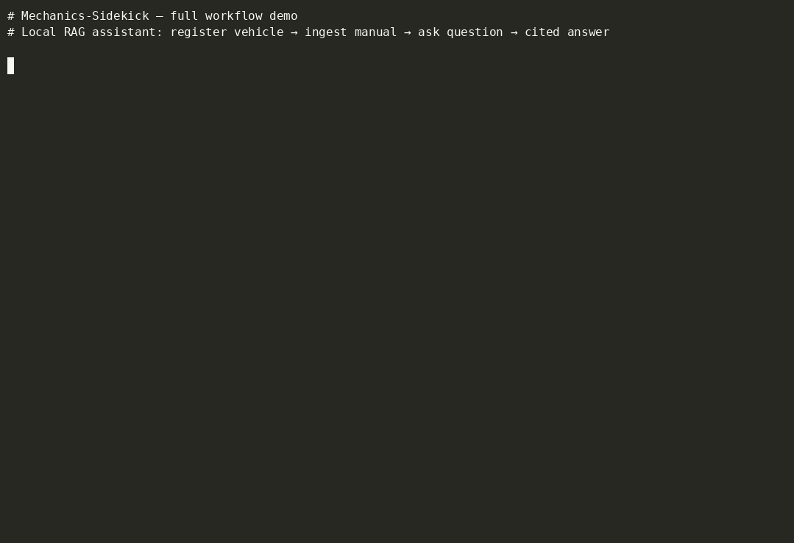

RAG · Local LLM
Mechanics Sidekick
Local CLI RAG assistant for service manuals
Overview
I've got a bunch of PDF service manuals for an old car, scattered across dozens of files, none of them organized into one clean book. Finding a torque spec or a wiring diagram usually meant opening five PDFs and Ctrl-F'ing each one. Mechanics Sidekick is the tool I wanted for that problem. It's a local CLI where I upload the PDFs once, open a "job" for whatever I'm working on, and ask questions in natural language. Answers come back with citations to the exact document and page so I can go verify them myself.
Technology Stack
Core
- Python 3.11+
- Typer + Rich (CLI)
- Pydantic Settings
- pytest
Data
- SQLite
- SQLAlchemy 2.0
- PyMuPDF (PDF extraction)
Local LLM
- Ollama
- llama3.2:3b (chat + context)
- nomic-embed-text (embeddings)
Architecture & Design Choices
Everything runs against Ollama on my own machine. No API keys, no cloud, no monthly bill. The honest reason is I wanted to play with local LLMs and see what the current generation could actually do. Nothing leaving my machine is a nice side effect, not the driver.
Most RAG setups reach for pgvector, Qdrant, or Chroma. I just stored everything in SQLite, embeddings and all. This was my first RAG project, it's single-user, and I wanted to build it with tools I already knew rather than fighting a new database at the same time as learning RAG. Swapping in a real vector store later is straightforward if I ever need it, but for a single-user CLI SQLite is fine.
Naive chunking on service manuals destroys context — a torque value lifted from the middle of a procedure loses the engine variant, the system, and the step it belonged to. So before each chunk gets embedded, a lightweight LLM call generates a short summary that situates it (which engine, which system, which procedure) and that summary is prepended to the chunk text. It's contextual retrieval — the embedding represents the chunk plus its place in the manual, not just the raw words.
Chunking itself is structure-aware rather than fixed-size. The PDF extractor reads font metadata (bold, ALL CAPS, font-size jumps) to detect section headings, and every chunk carries the section title it came from. That keeps related steps together and gives the retriever something to anchor on beyond raw similarity.
Project Media

Full workflow in one take — vehicle → ingest → job → cited answer. Runs fully locally against Ollama; nothing leaves the machine.
What Works Today
Add a vehicle, upload one or more PDF manuals, open a job against that vehicle, and chat with it. PDFs get extracted page by page, split into overlapping chunks, embedded locally, and stored in SQLite. When I ask a question the system embeds it, pulls the nearest chunks by brute-force cosine similarity over the full corpus, and sends them to the local LLM along with the question. There's no reranker — retrieved chunks go straight to the model. Answers come back cited. I've been running it against my own library of manuals.